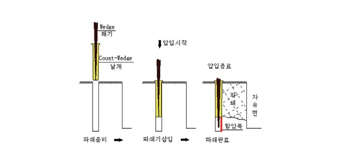

Super Wedge 무진동·무소음 암반파쇄 공법을 소개합니다
| 진동공법 | 화약발파 | 대발파, 일반발파, 미진동 발파, 진동제어 발파, 벤치 컷 |
| 조절 폭파 | 라인 드릴링, 프리스플리팅, 스무스 블래스팅 | |
| 플라즈마 공법 | 고압 방전 충격파 파쇄 | |
| 브레이크 공법 | 유압 브레이커 타격 파쇄 | |
| 무진동 굴착공법 | 기계식 굴착공법 | Super Wedge (슈퍼웨지) 당사 공법 |
| 전단면 굴착기 | TBM(Tunnel Boring Machine), 로드헤더 | |
| 인력식 굴착공법 | 다르다, 할암기, 정/망치 인력 굴착 | |
| 약액주입공법 | 팽창성파쇄재(BRISTAR, Calm-ite 등) |
Super Wedge 공법은 기존 인력으로 운용하던 유압 할암방식을 탈피하여
무진동 암반파쇄기를 굴삭기에 장착한 기계화 공법입니다.
굴삭기 운전자가 리모콘을 사용하여 직접 파쇄작업을 수행할 수 있기 때문에
보조 인력이 필요 없으며,
암반파쇄 후 브레이커에 의한 별도의 2차 파쇄작업 없이
천공 → 파쇄 → 집토 → 상차의 연속(동시)시공이 가능한
기계화된 무진동·무소음 암반파쇄공법입니다.
Super Wedge 공법은 Lami 법칙에 근거하여 유압에 의한 수직력(P)은 쐐기에 의하여 수평분력(R)으로 전환되고,
이때 쐐기의 각도(Φ)에 의하여 수평력은 수직력의 약 10~20배까지 확대되어
암반의 인장응력 및 전단응력을 초과하여 암반을 파쇄합니다.

암반파쇄 시 진동과 소음이 없어 도심지·민감구역에서도 안전하게 시공 가능합니다
수직천공으로 천공기 가동효율을 극대화하고, 천공 청소공정으로 파쇄효율을 향상시킵니다
1차 파쇄 후 굴삭기 버켓으로 집석하므로 브레이커 등으로 2차 파쇄가 불필요합니다
천공·파쇄·집석 작업이 연속으로 진행되어 작업량이 일정하고 공기 단축에 유리합니다
굴삭기 운전자가 직접 파쇄작업을 수행하여 소수 인력만 필요하고 안전사고 위험이 낮습니다
막장 전방 안전구간(6~8m)에 작업인력이 없어 터널 굴착 시 안전성이 매우 높습니다
기계화 시공으로 날씨·환경에 관계없이 전천후 작업이 가능하며 24시간 운용이 가능합니다
파쇄된 암반은 집석과 동시에 상차가 가능하여 버력 처리 시간을 최소화합니다
현장에서의 암반에 대한 굴착공사 시 종래의 화약에 의한 발파공법을 적용하는 경우 발파진동·소음 및 분진 등이 주변 구조물, 인체, 가축류, 기기류 등에 영향을 주어 민원이 야기될 소지가 있습니다.
이에 따라 최근에는 진동·소음 및 분진 없이 암반을 파쇄하는 정적파쇄 공법이 요구되고 있습니다.
특히, 도심지 내의 건물터파기 및 도로확장, 신설, 지하철, 고속철도 등의 공사에서 암반 노출시 기존의 발파작업으로는 집단민원 등으로 인해 공사 진행이 불가능한 현장에 무진동, 무소음 암반파쇄 Super Wedge 공법을 적용하면 효과적으로 암반을 제거할 수 있습니다.
다양한 현장에서 Super Wedge 공법이 적용됩니다
※ 실제 시공 사진은 추후 업로드 예정입니다